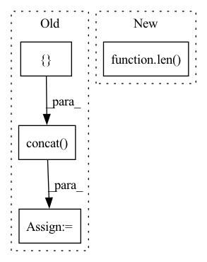

Pattern ID :1937

Before Change
columns=["pred_" + str(i) for i in range(horizons)]).sort_index()
if pp:
df = pd.concat([true_outputs, predicted], axis=1)
df.to_csv(os.path.join(self.path, pref + "_" + str(out) + ".csv"), index_label="time")
self.out_cols = [out]
self.process_results(true_outputs.values, predicted.values, pref + "_", index=dt_index, **plot_args)
After Change
batch_size=self.config["batch_size"],
verbose=1)
predicted, true_outputs = self.denormalize_data(inputs[1] if len(inputs)>1 else inputs[0],
predicted,
true_outputs[0],
in_cols=self.in_cols,
In pattern: SUPERPATTERN
Frequency: 4
Non-data size: 4
Instances
Fragment ID: 8596983
Project Name: atrcheema/dl4seq
Commit Name: c32b136d6756bcd78a467535b05ac29244e72bf5
Time: 2021-04-27
Author: ather_abbas786@yahoo.com
File Name: examples/MultiInputSharedModel.py
M Class Name: MultiInputSharedModel
N Class Name: MultiInputSharedModel
M Method Name: predict(8)
N Method Name: predict(8)
M Parent Class: Model
N Parent Class: Model
M File Name: examples/MultiInputSharedModel.py
N File Name: examples/MultiInputSharedModel.py
M Start Line: 63
M End Line: 108
N Start Line: 66
N End Line: 113
'>
Before Change
all_files = glob.glob(f"{sub_dir}/*.csv")
df = pd.DataFrame()
for fpath in all_files:
f_df = pd.read_csv(fpath, index_col="Date Time",
encoding="unicode_escape", na_values=-9999)
f_df.index = pd.DatetimeIndex(f_df.index)
df = pd.concat([df, f_df]) // todo, such concatenation is slow.
df = df.sort_index()
After Change
if isinstance(st, int):
if en is None:
en = len(df)
assert isinstance(en, int)
return df.iloc[st:en]
elif st is not None:
return df.loc[st:en]
'>
Fragment ID: 8596981
Project Name: atrcheema/dl4seq
Commit Name: 40a6dd9ce37500119adb2b855a3f287633b5fcf3
Time: 2022-06-15
Author: ather_abbas786@yahoo.com
File Name: ai4water/datasets/datasets.py
M Class Name: WeatherJena
N Class Name: WeatherJena
M Method Name: fetch(3)
N Method Name: fetch(3)
M Parent Class: Datasets
N Parent Class: Datasets
M File Name: ai4water/datasets/datasets.py
N File Name: ai4water/datasets/datasets.py
M Start Line: 528
M End Line: 572
N Start Line: 557
N End Line: 604
'>
Before Change
predictions = []
observations = []
for idx, out in enumerate(out_cols):
self.out_cols = [self.config["outputs"][idx]] // because fetch_data depends upon self.outs
scaler_key = str(idx) + scaler_key
inputs, true_outputs = self.test_data(st=st, en=en, indices=indices, scaler_key=scaler_key,
use_datetime_index=use_datetime_index, data=self.data[idx])
first_input, inputs, dt_index = self.deindexify_input_data(inputs, use_datetime_index=use_datetime_index)
predicted = self._model.predict(x=inputs,
batch_size=self.config["batch_size"],
verbose=1)
predicted, true_outputs = self.denormalize_data(inputs[1], predicted, true_outputs[0], scaler_key)
self.out_cols = self.config["outputs"] // setting the actual output columns back to original
horizons = self.config["forecast_length"]
if self.quantiles is None:
true_outputs = pd.DataFrame(true_outputs.reshape(-1, horizons), index=dt_index,
columns=["true_" + str(i) for i in range(horizons)]).sort_index()
predicted = pd.DataFrame(predicted.reshape(-1, horizons), index=dt_index,
columns=["pred_" + str(i) for i in range(horizons)]).sort_index()
if pp:
df = pd.concat([true_outputs, predicted], axis=1)
df.to_csv(os.path.join(self.path, pref + "_" + str(out) + ".csv"), index_label="time")
self.out_cols = [out]
self.process_results(true_outputs.values, predicted.values, pref + "_", index=dt_index, **plot_args)
After Change
batch_size=self.config["batch_size"],
verbose=1)
predicted, true_outputs = self.denormalize_data(inputs[1] if len(inputs)>1 else inputs[0],
predicted,
true_outputs[0],
in_cols=self.in_cols,
'>
Fragment ID: 8596988
Project Name: atrcheema/ai4water
Commit Name: c32b136d6756bcd78a467535b05ac29244e72bf5
Time: 2021-04-27
Author: ather_abbas786@yahoo.com
File Name: examples/MultiInputSharedModel.py
M Class Name: MultiInputSharedModel
N Class Name: MultiInputSharedModel
M Method Name: predict(8)
N Method Name: predict(8)
M Parent Class: Model
N Parent Class: Model
M File Name: examples/MultiInputSharedModel.py
N File Name: examples/MultiInputSharedModel.py
M Start Line: 63
M End Line: 108
N Start Line: 66
N End Line: 113